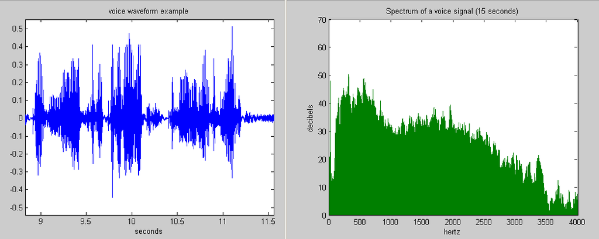
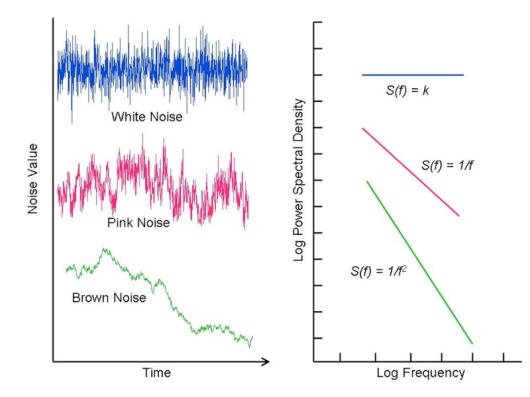

1/f noise 在MOSFET的電路設計當中是不可忽略的非理想效應。它的成因是來自於氧化層介面的缺陷捕捉過程，因此也成為評斷氧化層品質的指標。
本文以物理模型搭配訊號處理的理論，推導出2-Level Trap 在Poisson Process下的功率頻譜，並推導出1/f頻譜的數學公式，同時也用程式模擬驗證。
當中的物理概念和分析手法，值得我們學習與欣賞。
1/f Power Spectrum and MOSFETPrior knowledge: Electronic, Physics, Signal Process
Introdution of noise
雜訊無所不在，對於任何的物理量，不論是環境的溫度、水庫的水位、又或者是股票市場當中震盪的價格都存在著浮動。所以說只要對自然界的任何物理量，看似穩定的系統不斷的做抽樣量測，只要儀器夠
精準都能量出數值的浮動。簡單來說，如果把一個電池接上一個電阻並測量兩端的電流，若是使用高精準的安培計測量可以發現兩端的電流會有些許震盪，就如一個穩定的訊號加上一點雜訊
\[I(t) = \bar{I} + i(t)\]
Noise observe in the data
那我們就稱$i(t)$為系統的雜訊(noise)。儘管雜訊的存在會影響系統的穩定並造成應用上的困擾，例如限制了訊息傳輸和數據處理的速度，然而訊號中的雜訊卻夾帶著微觀系統與周圍環境互動的重要訊息，
成為分析和研究的重要指標。
如今雜訊噪音的研究目前已涵蓋了各個領域當中，包含了生物神經科學(Neuron Science)、通訊(Communication)、光學(Optics)、半導體元件(Semiconductor)、經濟學(Economics)、非線性系統
(Non-Linear System)、量子資訊(Quantum Information)等等。而接下來我們將針對半導體元件的雜訊噪音做介紹並從理論探討其形成的機制。
Comon 1/f spectrum from Differnet field, Wikipidea
有關噪音的分析(上述當中的$i(t)$)，最簡的方式就是透過傅立葉轉換得到的雜訊頻譜作分析。傅立葉轉換可以將看似雜亂無章的雜訊$i(t)$拆解成數個頻率不同、相位、震幅不同的sin波的疊加
\[i(t) = \sum_{\omega=0}^{\infty} A(\omega) \cos(\omega t + \phi) = \int_{\omega=0}^{\omega=\infty} A(\omega) e^{i(\omega t + \phi)} \, dt\]
舉例來說，把一段一個人說話的聲音訊號做傅立葉轉換，可以得到頻譜。聲音訊號的頻譜又可以稱做聲紋，當中夾帶了共振腔體的共振頻率等，成為一個人有如指紋般獨一無二的聲音特徵，是分析訊號常見的手法。

Human sounds and FFT spectrum , Wikipidea
相同的，若是我們將一個場效電晶體(MOSFET)的Gate和Drain(閘極和汲極)給定一個固定電壓並測量Drain current，會發現一個穩定的電流訊號外加一個微小的雜訊，此雜訊被稱作低頻雜訊。那實際上這樣的雜
訊夾帶著有關電晶體氧化層缺陷密度捕捉的訊息，成為分析電晶體製程的常見的手法，關於這樣的原理與細節我們會在接下來仔細說明。 MOSFET connection and measured noised data
[註解3]當時其實不是直接想去量alpha粒子的能量，原本是在測量核衰變的alpha粒子在空氣中能穿透多遠的距離(我猜測是想用核衰變的alpha粒子來做繞射相關的實驗，因此要抓距離)，然後就剛好
做了alpha粒子的能量量測。
也就是說，若是將傅立葉轉換後的功率頻譜與頻率以log scale作圖，會發現頻譜的斜率恰巧為-1。然而這個特殊的現象卻是半導體元件內物理獨特的特徵，是在普通的電阻中無法看到的(一般的雜訊經過傅立
葉轉換後，僅會得到一個定值的功率頻譜，稱之白噪音)
Impact of interfacial layer on low-frequency noise of HfSiON dielectric MOSFETs,B Min,IEEE transactions on electron devices, 200
而這樣在log-scale的頻譜當中有著斜率$-1$的雜訊被稱作$1/f$ noise，又或者稱作Pink noise(粉紅噪音)。科學家發現在大自然界許多聲音都有著類似的特徵，甚至在股市漲跌的微觀訊號中也有發現，而成因至
今尚未明瞭(題外話，有精神科醫師認為對失眠患者睡覺時撥放粉紅噪音能有助睡眠(?))。
然而這樣粉紅雜訊並不是都一直存在，只有在特定的系統中才會出現 ，常見其他種類的雜訊也有白噪音、棕噪音等。舉例來說，將白噪音做傅立葉轉換會發現頻率與功率頻譜的關係是個常數。

Differnet catagory type of noise
那為什麼在電晶體當中會有$1/f$ noise的出現呢? 這個問題在應用上阻礙了類比電路的設計，由於電路有時需要處理低頻率的訊號，若是忽略了電晶體本身就自帶了低頻率的雜訊將會影響到訊號轉換的品質，好在
聰明的工程師在設計電路時，就會將電晶體自帶的$1/f$ noise建到電路模型當中，並用特殊的電路設計消除了這樣的問題。
首先我們先猜測Drain current所測量到的電流浮動是來自於通道內原本受到Drain voltage作用下由Source通往Drain的電子被半導體通道和相鄰氧化層介面的缺陷捕捉所導致。此處的缺陷指的是氧化層中能
隙間(band gap)禁帶中因為介面重構和缺陷所形成的缺陷態(Trap State)，可用於容納電子。若是通道內的電子被氧化層的缺陷態捕捉，將導致通道內載子濃度的減少而降低電流；反之氧化層帶電荷的缺陷也
有機率性釋放電子至通道而增加電流。因此這樣來回的捕捉與釋放，就產生了量測上所觀察到的雜訊。
2-level trap model in the interface between Si/SiO2
至於為何這樣的雜訊在經過頻譜分析會得到$1/f$ 雜訊，則待接下來的解釋。現在我們基於缺陷的捕捉和釋放的模型進一步分析，現在我們先聚焦在單一組缺陷的捕捉釋放過程。
首先我們先假設缺陷與電子捕捉/釋放的機率為v，即在單位時間內電子有著機率$v$的可能會從通道被捕捉至缺陷，相同的也有著機率$v$由缺陷被釋放回通道。就如下圖當中，若是電子處於通道內則電流訊號為$a$，
若是被捕捉至缺陷則訊號為$-a$。
2-level trap signal under poisson process
而前述所說的Transition過程是完全隨機的現象，又被稱作普松過程(Poisson Process)。若是現在我們想知道在時間內T，發生了多少次的Transition，非常直覺的是期望值或是平均值將會是vT，但若是我
們想知道整個的分布呢? 因為vT僅是最有可能的躍遷次數，實際上可能是一個以vT為peak向兩側衰減的分布，此分布被稱作Poisson Distribution，可以由Poisson formula得知分布情形
\[p(m, T) = \frac{{(\nu T)^m}}{{m!}}e^{-\nu T}\]
Poisson Distribution with $v=0.2$ $T=20$
現在我們介紹自相關函數(Autocorrelation Function)，一種常見用於分析雜訊的手法。我們先看定義：
\[R(\tau) = \lim_{{T\to\infty}} \frac{1}{T} \int_{t=0}^{t=T} x(t+\tau) x(t) \, dt\]
在給定一個時間$t$ 對應的訊號$x(t)$，我們想知道接下來的訊號和$x(t)$的相關性，我們可以把時間t以後每個瞬間的訊號與之內積並取平均。在了解這樣的概念後我們來計算Poisson Process下的2-level trap system
所給出的Autocorrelation function為何。
Autocorrelation funcinon is the prodcut between $x(t)$ and $x(t+\tau)$
要計算autocorrelation function，我們必須得到距離$t$瞬間，時間$τ$ 之後的訊號$x(t+τ)$的值。而這個值看似困難且無法預測，但實際上我們可以用普松過程的假設搭配普松分布公式推出兩個狀態分別的機率。假設在
$t$時$x(t)=a$，那經過一段時間$τ$後$x(t+τ)$的可能只有兩種分別是$a$或是$-a$，那處在$a$的可能代表這段時間τ經歷了偶數次的Transition，而若是處在-a則代表經歷了奇數次的Transition。現在假設x(t)=a因此計算自相關函數
Calcualtion of 2-level trap Autocorrelation under Poisson Process
看到這裡你或許會覺得納悶為何要大費周章的推導出2-level Trap Poisson Process的自相關函數，因為在訊號分析裡有一個有用的定理，Wiener–Khinchin Theorem，告訴我們將自相關函數做傅立葉轉換以後就可
以得到功率頻譜！(此處就不做證明了)
A discription of Wiener-Khinchin Theorem from wikipidea
Applying Wiener-Khinchin Theorem with Autocorrelation function
\begin{equation}
\begin{aligned}
S(\omega) & =4 \int_0^{\infty} \phi(\tau) \cos (\omega \tau) d \tau \\
& =4 \operatorname{Re}\left\{\int_0^{\infty} a^2 e^{-2 v \tau} e^{i \omega \tau} d \tau\right\} \\
& =4 a^2 \operatorname{Re}\left\{\int_0^{\infty} e^{(-2 v+i \omega) v \tau} d \tau\right\} \\
& =\frac{2 a^2 / v}{\left(1+\omega^2 / 4 v^2\right)}
\end{aligned}
\end{equation}
那我們現在就將上面推導出的Poisson Process of 2-level Trap's 畫出log-log plot
我們可以發現在
\[\omega \ll 2v\]
頻譜是個定值$S(ω)=2a^2/v$，而在另外個極限下
\[\omega \gg 2v\]
則
\[S(\omega) \propto \frac{1}{\omega^2}\]
將此頻譜公式對頻率作圖，並以log-log scale Plot，在corner frequency 以後斜率為-2的曲線，稱之Lorenz Curve。此Lorenz curve所表現的頻譜即為單一組2-level Trap 在Poisson Process下的功率頻譜。